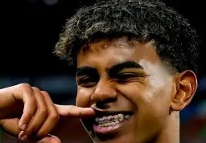

Lamine Yamal
Extremo derecho

Lamine Yamal es el talento más precoz de la historia del FC Barcelona. A sus 17 años ya es un referente del primer equipo y de la selección española.
- Dorsal: 19
- Nacionalidad: España
- Edad: 17 años
- Debút: 2023
Més que un club
Extremo derecho

Lamine Yamal es el talento más precoz de la historia del FC Barcelona. A sus 17 años ya es un referente del primer equipo y de la selección española.
Haz clic en cualquier jugador para ver su ficha completa
Extremo derecho
Dorsal: 19
España
Centrocampista
Dorsal: 8
España
Delantero centro
Dorsal: 9
Polonia
Centrocampista
Dorsal: 21
Países Bajos
Defensa central
Dorsal: 4
Uruguay
Portero
Dorsal: 1
Alemania
Centrocampista
Dorsal: 6
España
Extremo izquierdo
Dorsal: 11
Brasil
El FC Barcelona fue fundado en 1899 por Joan Gamper. Es uno de los clubes más laureados del mundo.
Su estilo de juego, el "tiki-taka", marcó una época dorada entre 2008 y 2015.